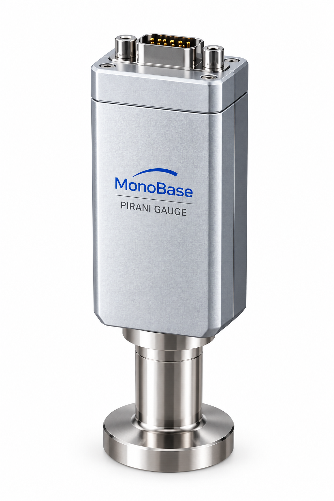
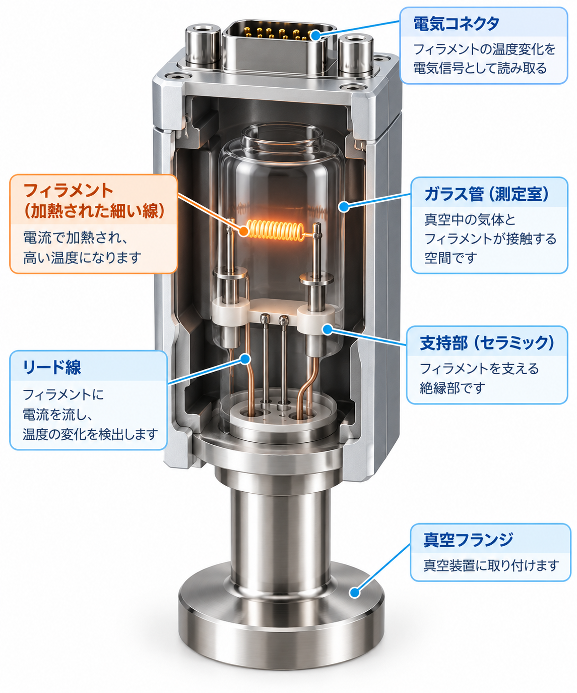
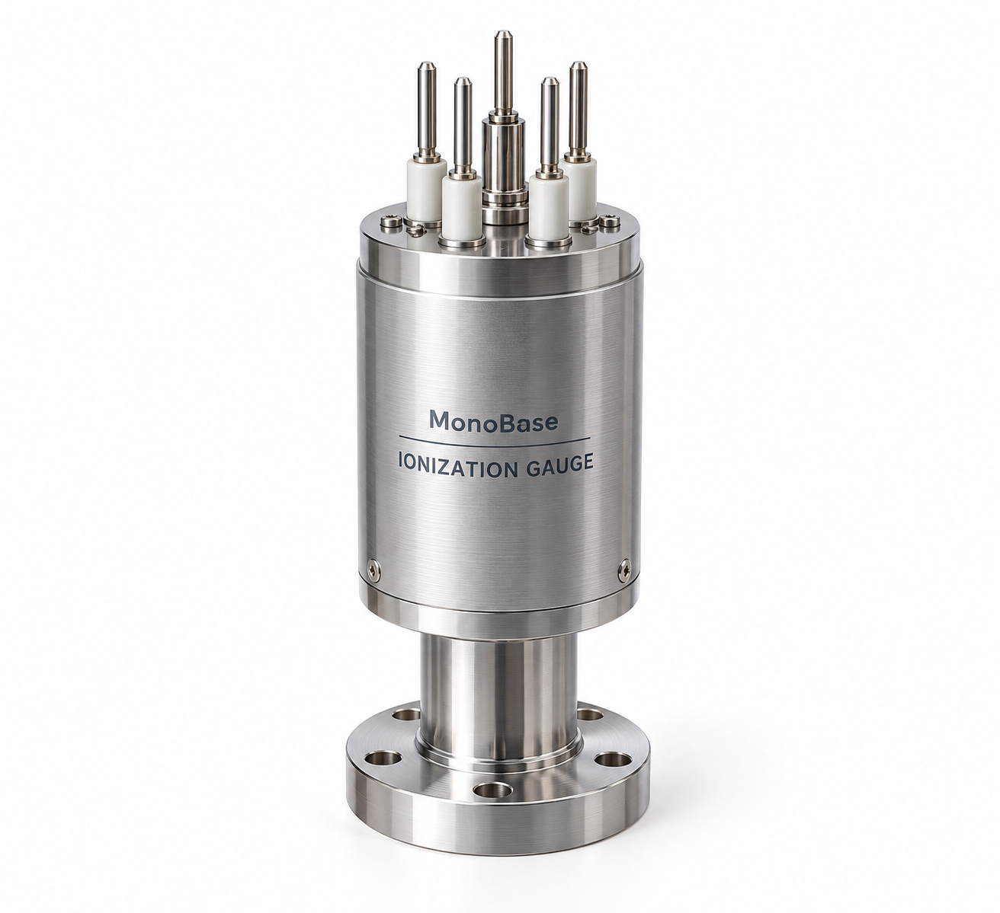
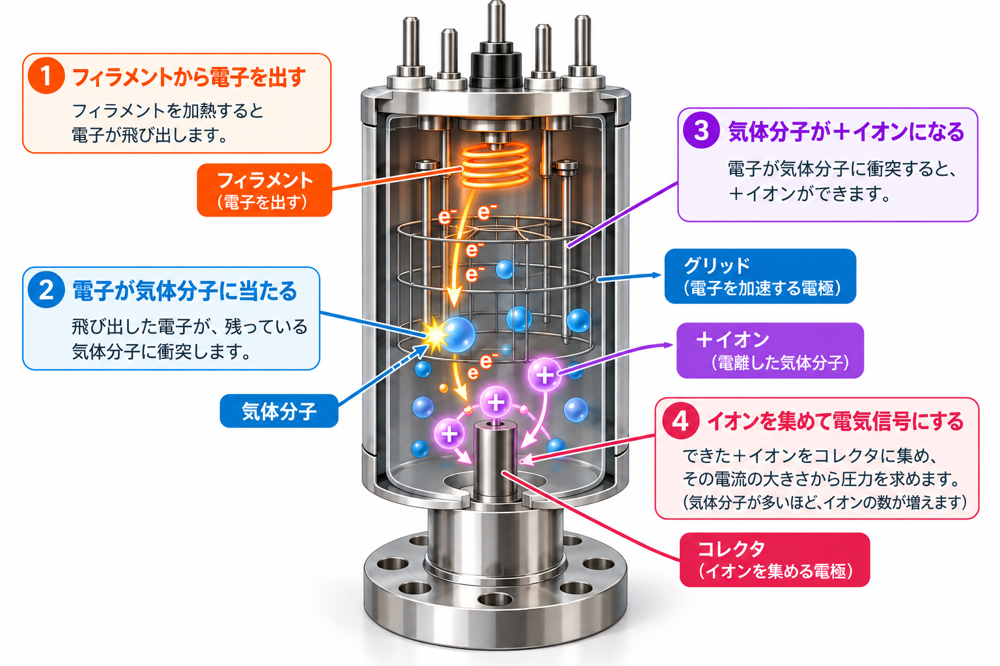

葵（あおい）
真空って目に見えないけど、どうやって測るんだろう？
ポンプにも得意な範囲がありました。測る側にも、圧力に合った方法があります。
葵（あおい）
真空って目に見えないけど、どうやって測るんだろう？

陽斗（はると）
圧力で表すなら、何か測る方法があるってことかな？

けー子ちゃん先生
そうですね。真空は「真空計」を使って、圧力として確かめます。測る範囲によって方法も違うんですよ。
では、真空計は何を手がかりに圧力を測っているのでしょう？
真空の深さによって、適した測り方が変わります。代表的な3つの測り方を、まず全体で見てみましょう。
薄い膜が押される変化から、圧力を求める
加熱したフィラメントから、熱が逃げる変化を利用する
気体をイオン化し、その量に関係する電気信号から圧力を求める
※測定できる範囲は方式・機種によって異なり、互いに重なる範囲もあります。

ちゃんと真空になったのかな？

前に、真空は圧力で表すって習ったね。

圧力を調べるために使うのが、真空計です。
圧力とは、面をどれくらいの強さで押しているかを表すものです。単位には Pa（パスカル）を使います。真空では、圧力が低いほど「真空度が高い」と表します。
1 Pa ＝ 1 N/m²（1 m²あたりに1 Nの力がかかる圧力）
圧力が高い
圧力が低い → 真空度が高い
ここでの数値は比較の例です。合格値や実機の操作目標ではありません。
では、真空計はこの「圧力」をどうやって感じ取っているのでしょう？
真空計には、測る圧力の範囲に合わせていくつかの測り方があります。まずは、気体が膜を押す力を利用する隔膜式の真空計を見てみましょう。


このように、膜のわずかな変化を利用して圧力を測るのが隔膜式の真空計です。

目に見えない空気でも、膜は押せるんだね。
膜の動きだけでなく、気体が熱を運ぶ性質や電気の信号を利用して圧力を測る方法もあります。まずは、熱を利用するピラニ真空計を見てみましょう。


フィラメント：電気で加熱する細い線。気体への熱の逃げ方を調べます。
この熱の逃げ方の違いを電気的に読み取り、圧力を求めます。フィラメントの温度変化を電気抵抗の変化として検出し、圧力に換算します。

気体が少ないほど熱が逃げにくくなる。その違いから圧力がわかるんですね。
ピラニ真空計は気体の種類によって熱の伝わり方が異なるため、表示値も影響を受けます。実機では測定条件を確認します。
さらに圧力が低くなると、残っている気体はとても少なくなります。そこで、気体をイオンに変え、その量に関係する電気信号を利用して圧力を測ります。


フィラメントから出た電子が気体分子に衝突すると、＋イオンができます。できたイオンをコレクタで集め、そのイオン電流の大きさから圧力を求めます。
イオン：電気を帯びた粒子。電離真空計では、残っている気体をイオン化して検出します。
気体がとても少なくなる高真空では、気体をイオンにして、その電気信号から圧力を測ります。
ここまで見てきた3つの真空計を比べながら、どんなときに使い分けるのか整理してみましょう。
3つとも測り方が違ったけど、どれを使えばいいの？
測りたい圧力に合わせて、真空計を選ぶのかな？

そうです。大切なのは、測りたい圧力に合った真空計を選ぶことですよ。
真空装置では、圧力が下がっていく途中で、測定に適した真空計も変わります。
大気圧付近～隔膜式異なるセンサーを組み合わせた真空計もあります。表示器が1つでも、内部で複数の方式を使っている場合があります。
真空計には、それぞれ得意な圧力の範囲があります。
見た目ではなく、真空計で圧力を測って確かめます。
膜を押す力、熱の逃げ方、イオンなどを利用して圧力を測ります。
真空計には、それぞれ得意な圧力の範囲があります。
ポンプは動いているのに、真空計の数字が下がらない。次は、その理由を考えます。